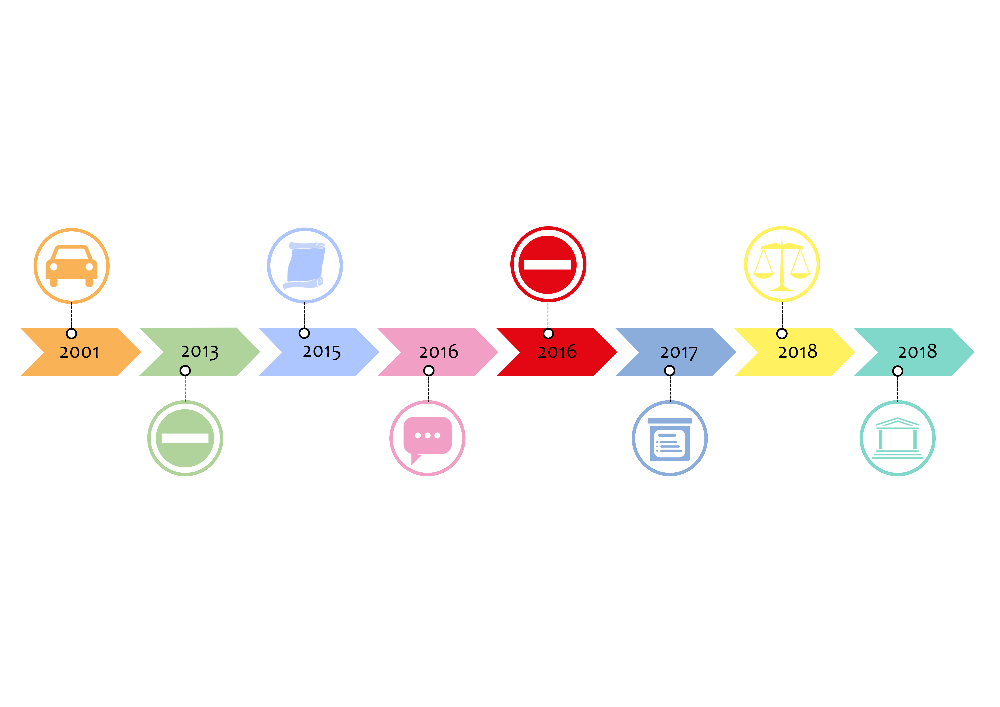

<div class="container">
   

   <map name="frise_map">
       <area target="" alt="Prélude" title="Prélude" href="#chronologie-1" coords="2,3,301,502" shape="rect">
       <area target="" alt="Fermeture des voies sur berge (rive gauche)" title="Fermeture des voies sur berge (rive gauche)" href="#chronologie-2" coords="301,372,565,372,576,723,673,729,677,868,173,870,163,731,299,729" shape="poly">
       <area target="" alt="Annonces pour la rive droite" title="Annonces pour la rive droite" href="#chronologie-3" coords="505,2,893,5,852,370,852,494,573,496,571,368" shape="poly">
       <area target="" alt="Étude d’impact et débats" title="Étude d’impact et débats" href="#chronologie-4" coords="852,376,1129,374,1137,866,815,870" shape="poly">
       <area target="" alt="Fermeture des voies sur berge (rive droite)" title="Fermeture des voies sur berge (rive droite)" href="#chronologie-5" coords="1005,5,1519,3,1498,104,1408,377,1412,492,1127,492,1129,377,1011,104" shape="poly">
       <area target="" alt="Étude de suivi par le comité régional" title="Étude de suivi par le comité régional" href="#chronologie-6" coords="1408,379,1688,375,1688,703,1763,753,1767,869,1329,871,1325,730,1424,718" shape="poly">
       <area target="" alt="Justice&nbsp;: réouverture aux voitures rive droite" title="Justice&nbsp;: réouverture aux voitures rive droite" href="#chronologie-7" coords="1570,0,2106,0,2075,101,1960,364,1965,497,1688,495,1690,380,1587,109" shape="poly">
       <area target="" alt="Fermeture avec de nouveaux arguments" title="Fermeture avec de nouveaux arguments" href="#chronologie-8" coords="1959,374,2281,372,2289,734,2324,870,1862,870,1899,734,1969,734" shape="poly">
   </map>
</div>
